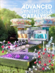
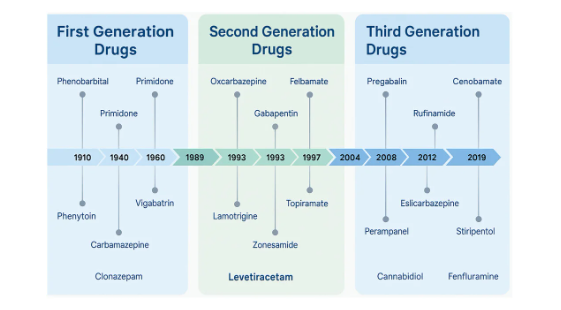
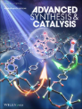
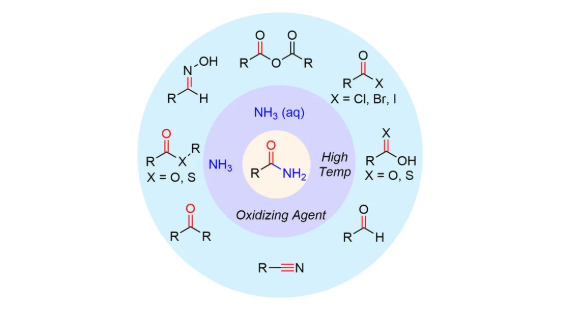

 [3] Mar 2026 · Advanced Synthesis & Catalysis · 368, e70358 Advances in the Synthesis of Levetiracetam: Classical Approaches and Patented Innovations Murugesan Sivaprakash, Kothapalli Bannoth Tejaswini, Kiran Kumar Pulukuri, Purushothaman Gopinath, Ekambaram Balaraman 
 [2] Jun 2025 · Advanced Synthesis & Catalysis · 367, e9607 Cobalt-Catalyzed Amide Synthesis from Alcohols: An Ammonia-Free Approach with Dihydrogen Release Rohit Kumar, Kothapalli Bonnoth Tejaswini, Chandrakant Gouda, Ekambaram Balaraman 
Chemistry & Biodiversity [1] Oct 2024 · Chemistry & Biodiversity · 21, e202401010 Synthesis, Evaluation and Docking Studies of Disubstituted N-Heterocyclic Derivatives as Anticancer Agents Sreenivasulu Reddy Gopireddy, Vivek Panwar, Ankan Sarkar, Manish Jain, Kothapalli Bannoth Tejaswini, Kothapalli Bannoth Chandrasekhar, Deepak Kumar Patent pending